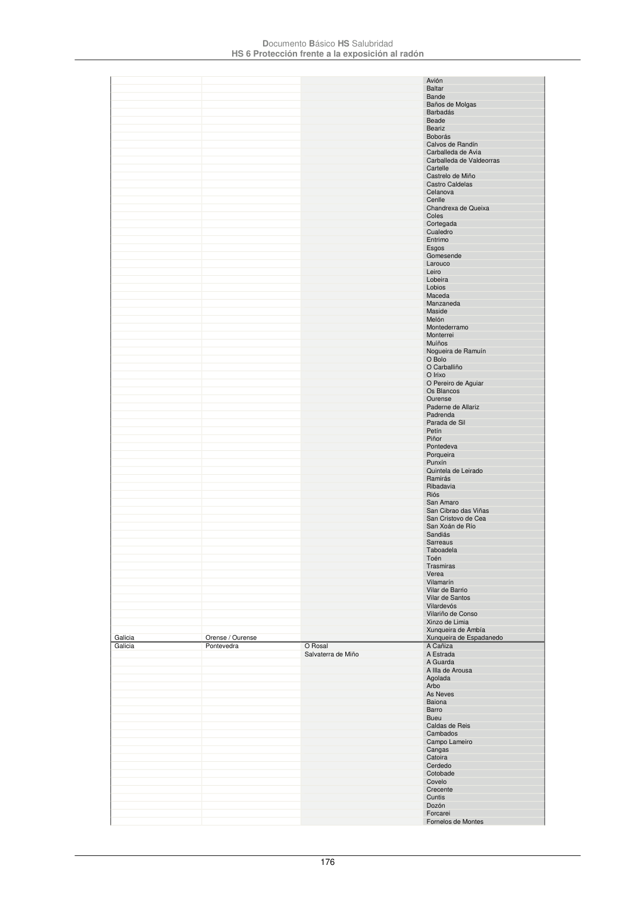

DB-HS Salubridad · edición 2022-06-14 · capa oficial
Documento DB-HS-oficial · SHA-256 del PDF 68df3caacc95f71aee2ec1ba7b2c65ae66155c21e3a8785521b8fdd4fd640d3b
Página física 176 de 184.
Copia fiel del PDF fuente · Fuente oficial
Ficha de la disposición en la fuente oficial
Formato: Texto de la página (Markdown)
Documento Básico HS Salubridad HS 6 Protección frente a la exposición al radón 176 Avión Baltar Bande Baños de Molgas Barbadás Beade Beariz Boborás Calvos de Randín Carballeda de Avia Carballeda de Valdeorras Cartelle Castrelo de Miño Castro Caldelas Celanova Cenlle Chandrexa de Queixa Coles Cortegada Cualedro Entrimo Esgos Gomesende Larouco Leiro Lobeira Lobios Maceda Manzaneda Maside Melón Montederramo Monterrei Muíños Nogueira de Ramuín O Bolo O Carballiño O Irixo O Pereiro de Aguiar Os Blancos Ourense Paderne de Allariz Padrenda Parada de Sil Petín Piñor Pontedeva Porqueira Punxín Quintela de Leirado Ramirás Ribadavia Riós San Amaro San Cibrao das Viñas San Cristovo de Cea San Xoán de Río Sandiás Sarreaus Taboadela Toén Trasmiras Verea Vilamarín Vilar de Barrio Vilar de Santos Vilardevós Vilariño de Conso Xinzo de Limia Xunqueira de Ambía Galicia Orense / Ourense Xunqueira de Espadanedo Galicia Pontevedra O Rosal A Cañiza Salvaterra de Miño A Estrada A Guarda A Illa de Arousa Agolada Arbo As Neves Baiona Barro Bueu Caldas de Reis Cambados Campo Lameiro Cangas Catoira Cerdedo Cotobade Covelo Crecente Cuntis Dozón Forcarei Fornelos de Montes

Datos candidatos: compruebe celdas y notas en el PDF.